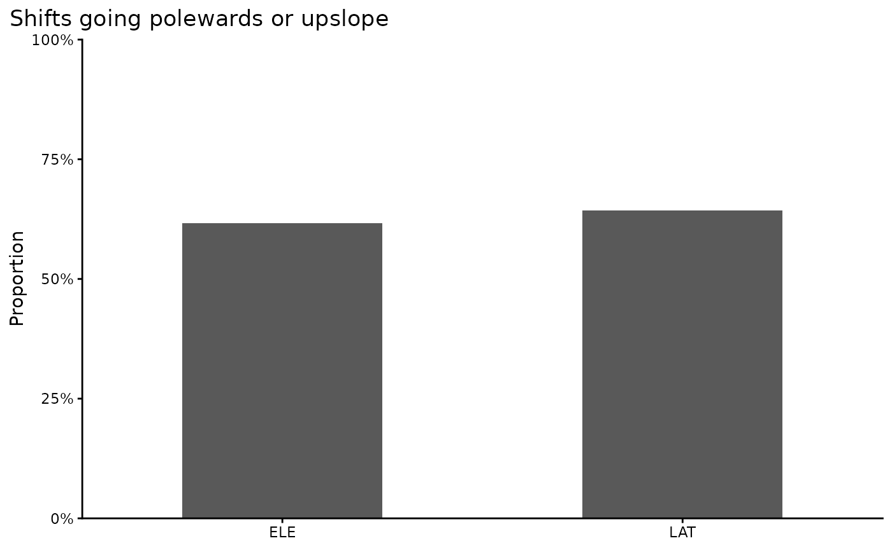

Curating Data for Hypothesis Testing
curating_for_hypothesis_testing.RmdCurating Data for Hypothesis Testing
Here, we demonstrate how BioShifts and the BioShiftR package can be used to access, subset, and organize bioshifts data for research, hypothesis testing, and connecting to external data sources.
Example Scenario
Perhaps we want to evaluate the extent that bird ranges in Europe are shifting.
Built-in filter steps
Many of BioShiftR’s functions provide simple methods for targeting,
filtering, and subsetting range shift data. The
get_shifts() function, for example, has arguments for
continent, type (of range shift), and group (broad taxonomic and
functional classifications); see the get_shifts() function
page for details on options.
Other functions which merge values from other dataframes to the range
shifts database also have filtering options, usually for selecting
study-level or species-specific values. For example, the
add_cv(), add_baselines(), and
add_poly_info() functions all contain options to either add
these values from species-level or study-level polygons.
Get the data
In this case, we can use get_shifts() to easily query
the 32,000+ range shifts in the BioShifts database to our target group,
target range shift type (here, latitudinal), and target
continent.
library(BioShiftR)
library(dplyr)
# get shifts for only Birds in Europe
eur_birds <-
get_shifts(group = "Birds", # filter to birds
continent = "Europe", # filter to Europe
type = c("LAT","ELE") # latitudinal shifts only
)
# view data
eur_birds %>% glimpse()
#> Rows: 2,569
#> Columns: 13
#> $ id <chr> "A001_P1_ELE_O_M01", "A001_P1_ELE_O_M01", "A001_P1…
#> $ article_id <chr> "A001", "A001", "A001", "A001", "A001", "A001", "A…
#> $ poly_id <chr> "P1", "P1", "P1", "P1", "P1", "P1", "P1", "P1", "P…
#> $ method_id <chr> "M01", "M01", "M01", "M01", "M01", "M01", "M01", "…
#> $ eco <chr> "Ter", "Ter", "Ter", "Ter", "Ter", "Ter", "Ter", "…
#> $ type <chr> "ELE", "ELE", "ELE", "ELE", "ELE", "ELE", "ELE", "…
#> $ param <chr> "O", "O", "O", "O", "O", "O", "O", "O", "O", "O", …
#> $ sp_name_publication <chr> "Aegithalos_caudatus", "Certhia_familiaris", "Dend…
#> $ sp_name_checked <chr> "Aegithalos_caudatus", "Certhia_familiaris", "Dend…
#> $ subsp <chr> NA, NA, NA, NA, NA, NA, NA, NA, NA, NA, NA, NA, NA…
#> $ calc_rate <dbl> -2.2128, -0.5106, -7.8723, -3.2340, 4.8511, -1.319…
#> $ calc_unit <chr> "m/year", "m/year", "m/year", "m/year", "m/year", …
#> $ direction <chr> "Lower Elevation", "Lower Elevation", "Lower Eleva…This produces a dataset of 2,569 examples of bird range shifts, detected in study areas within the European continent.
Assess directional trends
First, we will summarize the proportion of estimated shifts that are in the “expected” directions: First, poleward and upslope.
library(ggplot2)
eur_birds %>%
group_by(type) %>%
summarize(prop_expected = sum(calc_rate > 0)/n()*100) %>%
ggplot(aes(x = type, y = prop_expected)) +
geom_col(width = .5) +
theme_classic() +
coord_cartesian(xlim = c(.5, 2.5),
ylim = c(0,100),
expand = F) +
scale_y_continuous(label = scales::percent_format(scale = 1)) +
labs(x = NULL,
y = "Proportion",
title = "Shifts going polewards or upslope") +
theme(plot.title.position = "plot")
However, sometimes climate expectations can result in isotherm
velocities that are not in the upslope or poleward directions. With
BioShiftR, we can add the climate expectation to further
resolve expected shift rates.
# add climate velocity
eur_birds_cv <- eur_birds %>%
# add climate velocity
add_cv()
eur_birds_cv %>%
# find proprtion of shifts with same sign as cv
group_by(type) %>%
summarize(prop_same_sign = sum(sign(cv_temp_mean) == sign(calc_rate)) / n() * 100) %>%
# plot
ggplot(aes(x = type, y = prop_same_sign)) +
geom_col(width = .5) +
theme_classic() +
coord_cartesian(xlim = c(.5, 2.5),
ylim = c(0,100),
expand = F) +
scale_y_continuous(label = scales::percent_format(scale = 1)) +
labs(x = NULL,
y = "Proportion",
title = "Shifts going same direction as climate") +
theme(plot.title.position = "plot")
Assess methodological variables
Shifts are calculated with a wide variety of methods that can affect the precision of their estimates, or at least, limit the comparisons between shifts measured in different ways.
# add methods to birds database
eur_birds_cv_methods <-
eur_birds_cv %>%
add_methods()
# plot based on sample type
eur_birds_cv_methods %>%
ggplot(aes(x = category,
y = calc_rate)) +
geom_boxplot(outliers = F) +
facet_wrap(~type)